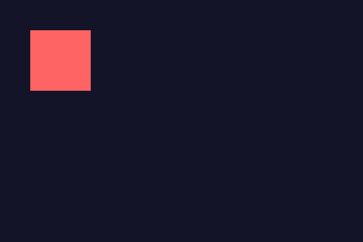
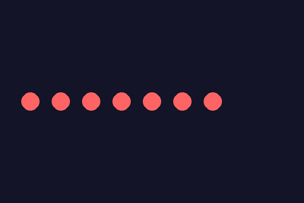

Surface: поверхность для изображения и кадра
Экран — это Surface, и можно создавать другие Surface в памяти, а потом наносить их друг на друга через blit().
screen, который вы получаете из
pygame.display.set_mode(), — это объект типа
pygame.Surface: прямоугольная область пикселей, на которой можно
рисовать. Экран — не единственная Surface в игре: можно создавать дополнительные
поверхности в памяти и работать с ними точно так же.
# Дополнительная поверхность 100x100, отдельная от экрана
sprajt = pygame.Surface((100, 100))
sprajt.fill((255, 100, 100))
# Наносим (blit) содержимое sprajt поверх экрана в точке (50, 50)
screen.blit(sprajt, (50, 50))
blit() — основная операция композиции в Pygame: «нарисовать
содержимое одной Surface поверх другой в заданной точке». Загруженное изображение
(pygame.image.load(), раздел 20.19) — это тоже Surface, и на
экран оно попадает тем же самым вызовом blit().
Прозрачность
У Surface есть два разных способа задать прозрачность. Первый — colorkey:
один конкретный цвет объявляется «прозрачным» и не рисуется вовсе (полезно для простой
спрайтовой графики без сглаженных краёв). Второй — per-pixel alpha: у
каждого пикселя своя степень прозрачности, что даёт мягкие полупрозрачные края, но требует
изображения в формате с альфа-каналом (обычно PNG) и поверхности, созданной с флагом
pygame.SRCALPHA.
screen.fill(...) в начале кадра, новая отрисовка просто накладывается на предыдущую — движущийся объект оставляет за собой шлейф из старых позиций вместо чистого кадра. Обратная ошибка — вызвать fill(), но забыть pygame.display.flip(): тогда нарисованный кадр так и останется невидимым, а окно будет показывать сплошной чёрный (или ранее залитый) цвет.
pygame.image.load() сама по себе сохраняет альфа-канал загруженной картинки. Прозрачность реально теряется, если после загрузки вызвать .convert() вместо .convert_alpha(): .convert() создаёт копию в формате пикселей экрана, но без per-pixel alpha, и края спрайта отрисуются со сплошным фоновым цветом вместо мягкого перехода. Тот же результат — если создать новую поверхность вручную (pygame.Surface(size)) без флага pygame.SRCALPHA, когда нужен именно per-pixel alpha.